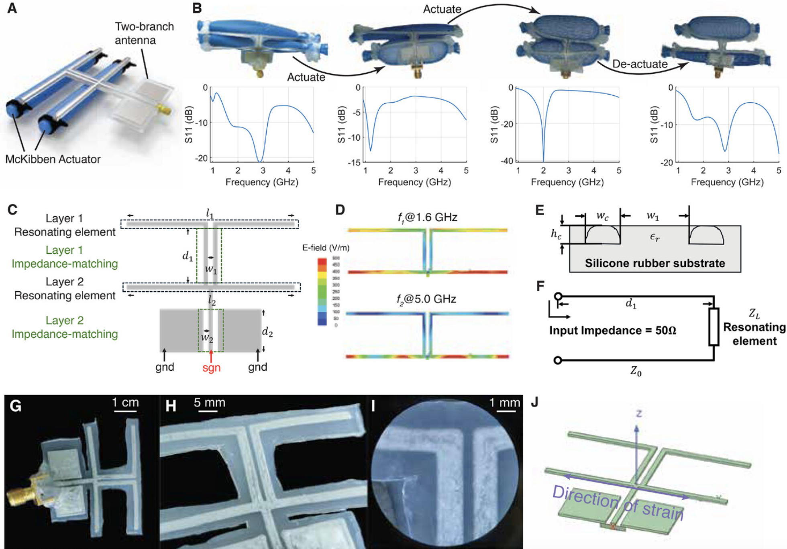

Project PASTA: Pneumatically-Actuated Liquid Metal-Based Frequency Reconfigurable Antenna
|
 |
|
|
| Software-defined radios and cognitive radios can switch their operating frequency across a wide range. Although analog and digital circuits enable cross-frequency operation of much of the RF frontend, there is a lack of practical antennas that are frequency-reconfigurable over such a wide range. Prior rigid antennas are either narrow-band with high radiation efficiency, or wide-band with low radiation efficiency. This study presents a soft, stretchable, compact, omnidirectional liquid metal composite antenna system to enable high radiation efficiency when reconfiguring to different frequencies across a wide band. On the hardware front, an extendable multi-branch stretchable liquid metal based antenna geometry is optimized that preserves high efficiency when switching across a wide range of frequencies. On the software front, a control algorithm is incorporated that ensures that the antenna automatically configures to the optimal received signal strength. The antenna design enables a strain limit of 33% for two independent actuatable branches, further enabling a switchable operating frequency range across 1–5 GHz. Experimental characterization demonstrates that PASTA reduces the radiation loss by 10–20 dB over the operating frequency range compared to state-of-the-art rigid and flexible antennas. |
Citation
- Pneumatically-Actuated Liquid Metal-Based Frequency Reconfigurable Antenna, Yiwen Song, Aditya Bharambe, Dinesh K Patel, Barbara Zhuo, Mason Zadan, Carmel Majidi and Swarun Kumar, Advanced Science 2026 [PAPER]